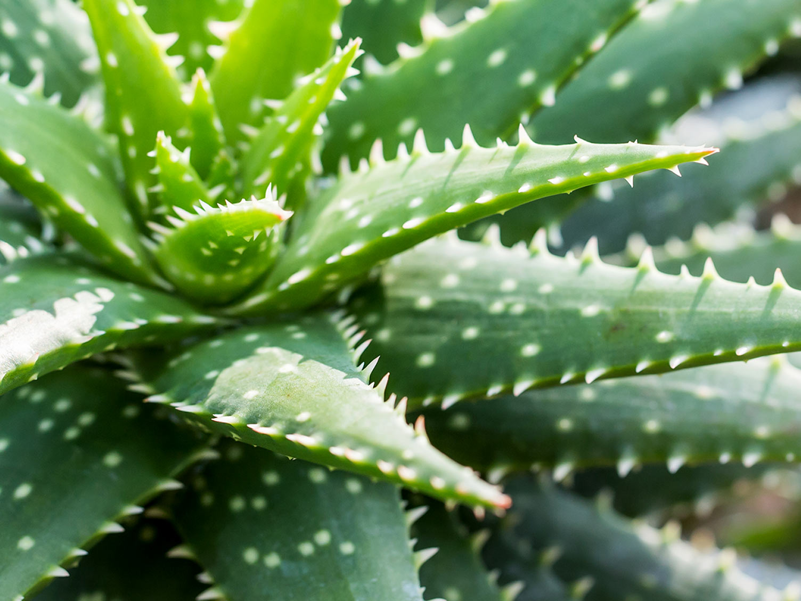
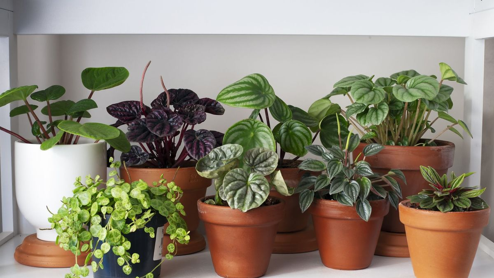
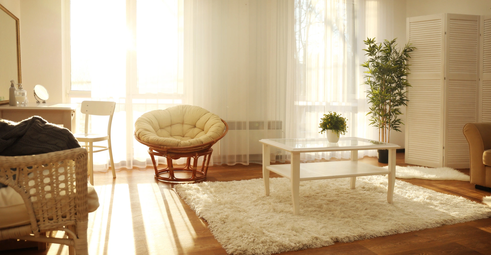

Aloe vera
Aloe vera is a succulent plant with over 500 species that is grown worldwide. It's a versatile plant that has many uses. If you want to grow more aloe vera plants, all you need to do is break off one of its leaves and plant it, and the plant will reproduce itself. Bringing aloe vera into your home can have many benefits. It can help purify the air, and it's also a low-maintenance plant that requires little attention to thrive. Additionally, you can use the gel from the leaves to soothe skin irritations or burns.
Indoor Plants
Indoor plants are beneficial for houses because they can purify the air by removing pollutants and toxins, making the air cleaner and fresher. In addition, they can also help to reduce stress and improve overall well-being, making them a great addition to any home.Indoor plants can also help to increase humidity levels in the home, which can be especially beneficial during the winter months when the air can become dry and uncomfortable. Additionally, research has shown that indoor plants can boost productivity and creativity, making them a great addition to home offices or workspaces.
Growing Plants
Growing plants in your house can improve air quality, reduce stress, and add a touch of nature to your home. In addition, indoor plants can help to reduce noise levels by absorbing sound, making them a great addition to apartments or homes located in noisy areas. They can also help to improve mood and mental health, as well as provide a sense of accomplishment and satisfaction when they grow and thrive under your care.
Natural Light
Natural light can improve mood, increase productivity, and provide important nutrients that can help to maintain overall health and well-being. In addition, natural light can help to regulate sleep patterns by keeping the body's circadian rhythm in sync, which can lead to better quality sleep and improved energy levels during the day. Natural light can also help to reduce eyestrain and headaches, making it easier to work or study for longer periods of time.